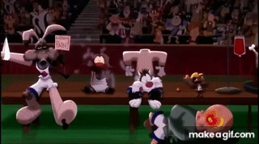
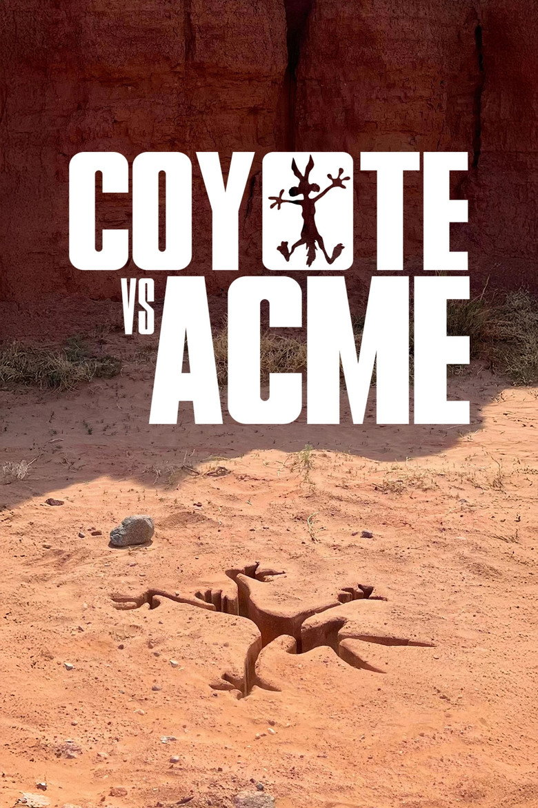
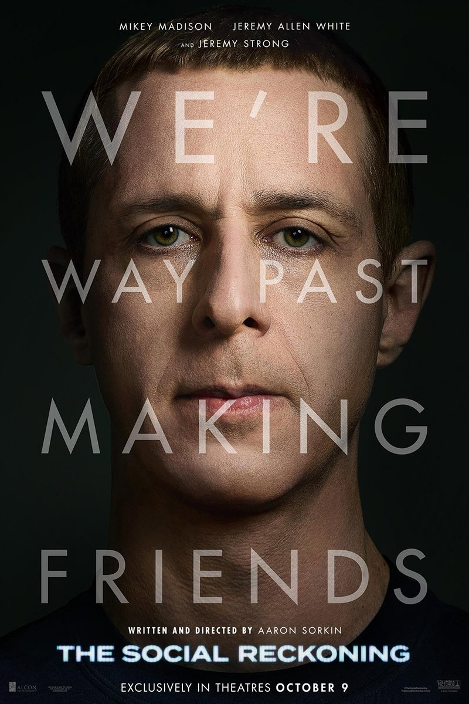

A tale of two movies
En las últimas semanas, varias situaciones me han hecho pensar que somos una suerte de Looney Tunes con poca gracia. El primer partido de voleibol me hizo sentir, a ratos, torpe como el pato Lucas; otras veces, ansioso como Silvestre y, en la mayoría de ocasiones, rabioso como el diablo de Tasmania. En cualquier caso, el partido fue una recreación del partido de Space Jam (solo la primera parte, sin la remontada). Me sentí apisonado y arrollado por un equipo de monsters comandados por un magnate sueco, al que le faltaba un puro y encadenar a Rafa Pascual para completar la representación de la obra. En esta ficción me habría gustado parecerme a Bill Murray, con el que, por alguna razón, me siento identificado. Sin embargo, nuestra estampa al final del partido era la siguiente.

Esta recreación fantasiosa de este fatídico partido me lleva a recordar también "Coyote vs. Acme". Aviso para lectores: en el resto de este post voy a hacer spoilers de esta película. La trama comienza mostrando una serie de fallos de productos de Acme que el Coyote ha comprado para urdir sus elaborados planes con los que atrapar al correcaminos. Hasta aquí, nada nuevo. Nos reímos del pobre Coyote y de cómo la física le juega malas pasadas. Sin embargo, la película se vuelve interesante cuando decide contratar a un despacho de abogados para demandar a Acme. Al final, después de que ese cánido de animación psicópata consiga hacernos llorar, descubrimos la verdad sobre Acme: han estado utilizando a los toons como ratones de laboratorio para probar mecanismos y principios activos que ayuden a definir nuevos productos para humanos. Acme, como empresa, por definición es malvada, y no tiene ningún reparo en torturar a Lucas con tal de obtener mayores beneficios. El CEO, Claudio, es un fanfarrón, un gallito (pun intended), que, incluso en un mundo donde la ley de la gravedad no siempre se cumple, demuestra que la ley de los poderosos sigue teniendo vigor.

Casi al mismo tiempo que el estreno de esta película, se ha estrenado también "El precio de la red" o, en el título original, "The social reckoning", que tiene una relación sorprendentemente directa. Esta es una película basada en hechos reales que muestra cómo se gestaron los Facebook papers. Estos documentos mostraron al mundo cómo Facebook perpetró barbaridades, y, como casi siempre, al final no pasó nada. La película se centra en cómo Zuckerberg potenció los contenidos extremistas, conociendo el peligro que esto entrañaba, con tal de no seguir teniendo pérdidas. Una de las consecuencias de esto fue el asalto al Capitolio de 2021, donde cientos de personas, espoleadas por Trump y por meses de exposición constante a mensajes de odio y noticias falsas en redes sociales, tomaron por la fuerza la sede del Congreso. La otra gran vertiente de esta investigación demostró que Facebook sabía el daño que hacía a adolescentes, especialmente a chicas, a las que causaba traumas con su imagen corporal, incluso promoviendo fotos de anorexia nerviosa y de autolesiones. Después de que esta historia saliera a la luz, se cambió el nombre por Meta y utilizó el Metaverso como una cortina de humo virtual. A Frances Haugen, quien destapó el caso, se la compara en la peli con Sydney Carton, de Historia de dos ciudades, de Dickens, porque se sacrificó por el bien común frente a los poderosos. Yo quiero compararla con el Coyote, mi héroe del pueblo.

Aunque la conexión entre las dos obras ya parece clara, aún hay un precedente, anterior a los Facebook papers, que hace que la película de los Looney Tunes parezca también inspirada en hechos reales. Tras salir de ver la película del Coyote, no me podía creer que mis 40 horas escuchando conferencias de Marta Peirano fueran a servir para algo. Ese algo es hacer esta conexión. En 2014 Facebook publicó un estudio en el que se demostraba que las personas sufrían daños en su estado de ánimo si les mostraban continuamente noticias negativas. O al revés, que podían animar a alguien si le mostraban contenido positivo. El estudio recibió duras críticas por usar a sus usuarios como cobayas, y la empresa pidió perdón.
Siendo honestos, esto no parece el descubrimiento del siglo, pero el diablo está en los detalles. Hicieron este experimento social con casi 700.000 personas, un tamaño de muestra mucho mayor que cualquier estudio anterior que se hubiera llevado a cabo. Esto les permitió no solo validar esa hipótesis, sino medirla, definir números de cuánto tiempo es necesario para cambiar el estado de ánimo de un porcentaje de personas, o qué tipo de noticias eran las más efectivas y establecer métricas.
En esta comparación obvia, somos los Looney Tunes (yo me pido al pato Lucas), y el mecanismo desarrollado es el uso de contenido para manipular nuestro estado de ánimo, de manera que su principal producto, la publicidad, tenga aún más efectividad cuando nos pilla eufóricos, rabiosos o descorazonados. Lo peor es que al gallo Claudio, a pesar de su carácter altivo (y de ser un pollo), le mueven las pasiones humanas. Mark Zuckerberg, en cambio, parece no mostrar sentimientos al resto de humanos, ni siquiera sentirse parte de la misma especie, lo que da mucho más miedo.